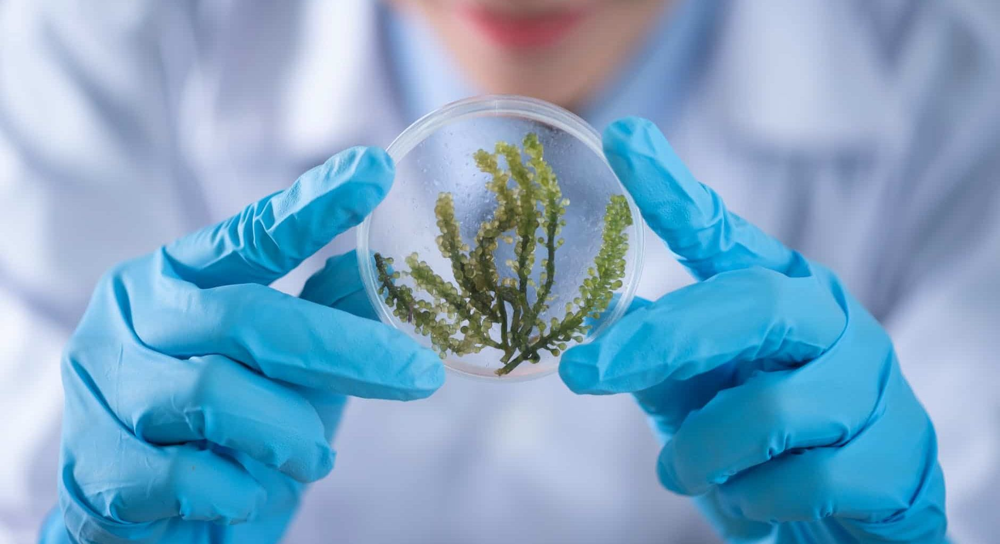
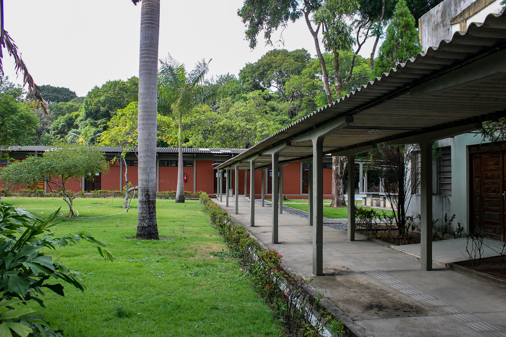
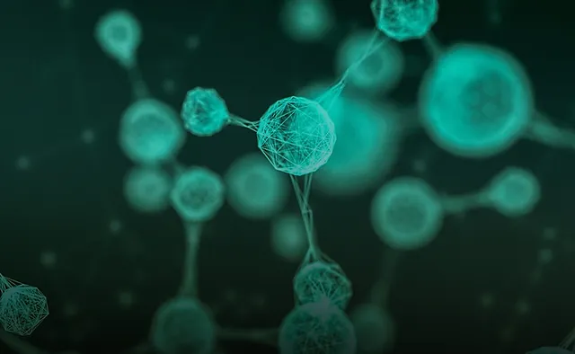
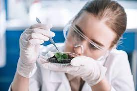
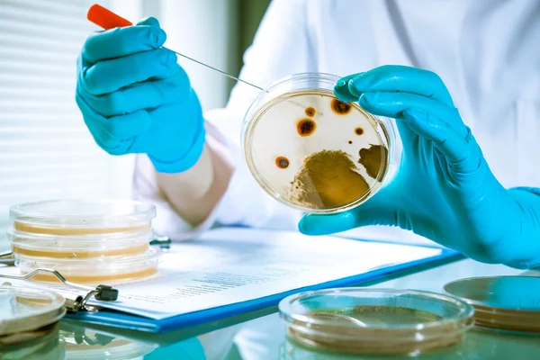
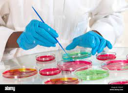

Português
Matemática
História
Geografia
Biologia
Física
Química
Artes
Filosofia
Sociologia
Ed. Física
Inglês
Home
Sobre Nós
Cadastre-se
Notícias - Biologia
SOBRE
CARREIRAS
DICAS
SIMULADOS
NOTÍCIAS
VÍDEO - AULAS
Notícias

Aracnídeos podem ser aliados na promoção da saúde humana

UFPB promove III Encontro Paraibano de Biologia Celular e Molecular
Biologia no Enem: quais assuntos mais caem na prova

Os Lançamentos de Publicações da SBEM em Diabetes e Biologia Molecular
Análises filogenéticas aplicadas à epidemiologia molecular de doenças virais
Biologia molecular estuda processos genéticos

E se a gente conhecer dentro de um laboratório o que vemos nos livros de Biologia?
Litoral Norte terá curso de pós-graduação em biologia marinha a partir de 13 de setembro
Estudo de SP desvenda via molecular importante para o controle do envelhecimento

A misteriosa criatura marinha descoberta por cientistas na costa britânica

Novo ecossistema marinho com recife de até 60 metros de altura é descoberto na costa do ES
Estudo revela riqueza de anfíbios e répteis na Estação Biologia Marinha Augusto Ruschi, em Aracruz/ES
Área mais rica em peixes recifais do Atlântico precisa de mais proteção
Pesquisadores avistam espécie de morcego-pescador sem registro há mais de uma década
Nova espécie de animal transparente que sobrevive até no espaço é descoberta em árvores da Unicamp